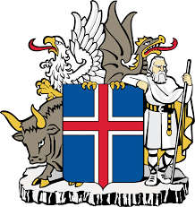
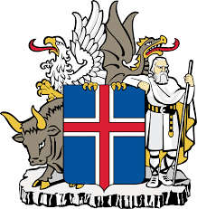

Iceland
 

Ісла́ндія , раніше Ісля́ндія — нордична острівна держава в Європі, розташована у північній частині Атлантичного океану на Серединно-Атлантичному хребті, з населенням близько 364 000 і площею 103 тис. км².
Столиця і найбільше місто — Рейк'явік , де, разом із прилеглими районами у південно-західному регіоні країни, проживає близько двох третин населення країни. Ісландія є вулканічно і геологічно активною територією.
Згідно з Книгою про заселення Ісландії , заселення острова почалося 874 року, коли норвезький ватажок Інгольф Арнарсон став першим постійним норвезьким поселенцем на острові. Інші відвідували острів раніше і мешкали на ньому впродовж зими. У наступні століття острів заселяли люди норвезького та ґельського походження. З 1262 по 1918 рр. він був частиною норвезької, а згодом данської монархії. До XX століття ісландці займалися переважно рибальством та землеробством. 1994 року країна приєдналася до Європейської економічної зони, що дає їй змогу відійти від рибальства й диверсифікувати спектр економічних та фінансових послуг, які вона надає.
Ісландія є країною з вільною ринковою економікою і з відносно низькими податками щодо інших країн OECD, при збереженні північної моделі з універсальними системами охорони здоров'я та освіти для своїх громадян. В останні роки Ісландія була однією з найбагатших та найрозвиненіших країн світу. 2010 року вона посіла 17-те місце у світі за показниками розвитку, згідно з Індексом розвитку людського потенціалу, та була четвертою країною світу за продуктивністю на душу населення. 2008 року банківська система країни систематично зазнавала провалів, спричиняючи економічний спад та політичну нестабільність.
Ісландія є технологічно розвиненою країною. Згідно з Freedom of the Press, в Ісландії медіа є найбільш вільними у світі. Ісландська культура базується на основі давньонорвезької спадщини. Більшість ісландців є вихідцями з Норвегії (зокрема із Західної Норвегії) та нащадками ґельських поселенців. Ісландська, північногерманська мова, є близькою до фарерської та до деяких західнонорвезьких діалектів. Національна культурна спадщина охоплює національну кухню, поезію та середньовічні ісландські саги. Нині Ісландія є країною з найменшим населенням з-поміж членів НАТО та єдиним учасником блоку без постійної армії. Населення країни приблизно дорівнює населенню українського міста Вінниця.
Книга про заселення Ісландії
- стурлубок - найстаріший, записаний між 1275 і 1280 роками Стурлом Тордарсоном єдиний, що зберігся повністю
- гауксбок, записаний між 1306 і 1308 роками Гаукром Ерлендссоном
- мелабок, написаний в 1313 році, зберігся фрагментарно, на двох шматках пергаментного рукопису, проте саме цей варіант найбільш точно передає першоджерело
- тордарбок, записаний в 17 столітті
- скардсарбок, записаний в 1636 році і оброблений Бйорном Йонссоном.
Столицею країни є місто Рейк'явік , з кількістю населення 116 642 осіб. Офіційна мова — ісландська. У столиці живе близько 50 % населення країни. Інші найбільші міста:
- коупавогур (бл. 28.000 осіб)
- гапнарфіордюр (бл. 24.000 осіб)
- акюрейрі (бл. 17.000 осіб)
- рейк'янесбаїр (бл. 12.000 осіб)
- гардабаїр (бл. 9.529 осіб)
- мосфельсбаїр (бл. 7.500 осіб)
За межами країни проживає близько 30 тис. ісландців (у США, Канаді, Норвегії, Данії).
Середня тривалість життя: чоловіки — 77 років, жінок — 82 роки. Віросповідання: протестанти.